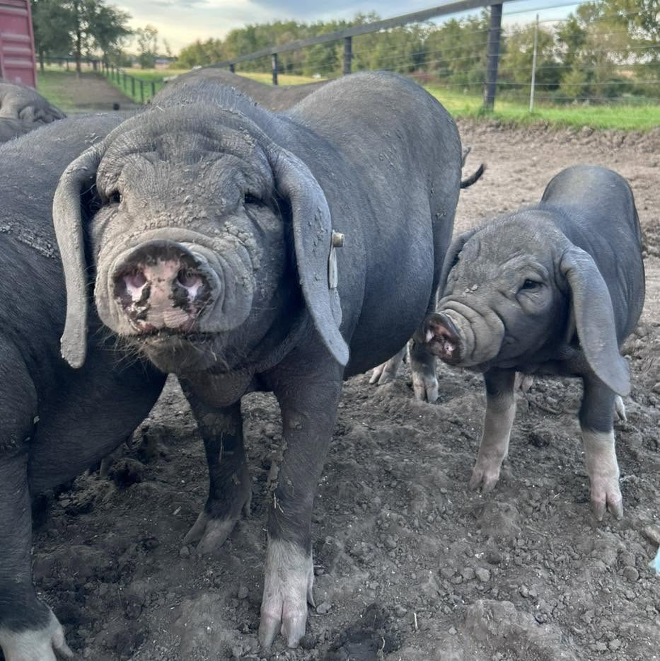

Pasture-raised pork
Chops, sausages, bacon, and roasts.
From breakfast favorites to slow-cooked suppers.SALEM, WISCONSIN
Good food starts with care. Here in Salem, Wisconsin, we raise animals with compassion and work toward healthier pastures, one day at a time.
Pigs · Chickens · Rabbits · Cattle
01 / THE RANCH

A ranch is more than what it produces. It’s the daily work of caring for everything that calls it home.
At Rich Earth Ranch, we raise pigs, chickens, rabbits, and cattle with a focus on self-sustaining, regenerative practices. From animals sharing the pasture to the arrival of new calves, every day brings something worth caring for.
Our philosophy is simple: care about the animal’s whole life. Come for the food, stay for the story, and get to know the people behind it.
Get to know the ranch on Facebook ↗
02 / FROM THE RANCH
Something for the grill, a slow Sunday roast, or dinner with the whole family. Get to know the meats we raise, then talk with us about what’s available.
Chops, sausages, bacon, and roasts.
From breakfast favorites to slow-cooked suppers.A centerpiece for your family table.
Ask us about sizes, pricing, and current availability.We’ll confirm your selection, pricing, and pickup together. Prefer to talk? Call (224) 703-3533.
03 / LIFE OUT HERE
The new arrivals, familiar faces, and everyday moments that make this place home. Tap a photograph for a closer look.
We welcomed our first two calves, Biscuit and Gravy, in September 2026.
Our cows, pigs, and chickens share the pasture as we work toward better land.
Meet our animals and follow the everyday adventures that make ranch life our own.
THE STORY KEEPS GROWING
Meet Chocolate Chip and her calves, Biscuit and Gravy. Follow their adventures, the changing pastures, and everyday ranch life on Facebook.
04 / COME SAY HELLO
Come meet the animals and the people behind your food. Send us a message to arrange a visit to the ranch in Salem, Wisconsin.
Let’s plan your visitCall or message us about pork or whole chicken. We’ll confirm current availability, pricing, and pickup arrangements directly with you.
We’d love to hear from you. Please contact us first so we can arrange a time and share the details for your visit.
Our Facebook page is where we share ranch news, new arrivals, and updates about our meats. You can also call us with a question.
05 / LET’S TALK
Have a question about our meats or a visit to the ranch? Call, email, or send us a message. We’d love to hear from you.
SALEM, WISCONSIN
Contact the ranch to arrange pickup or a visit.